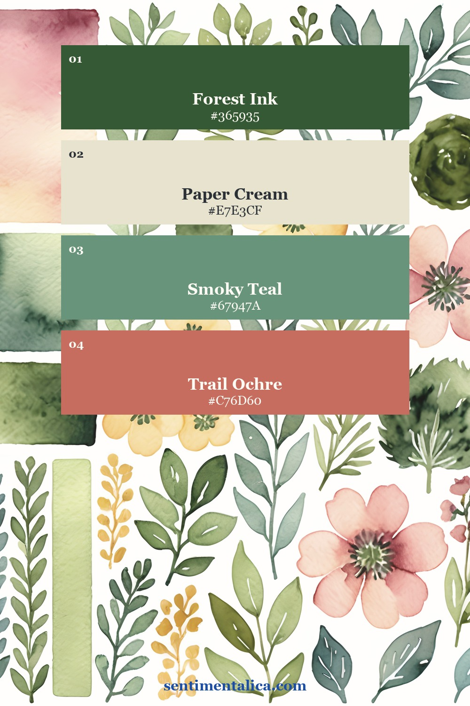
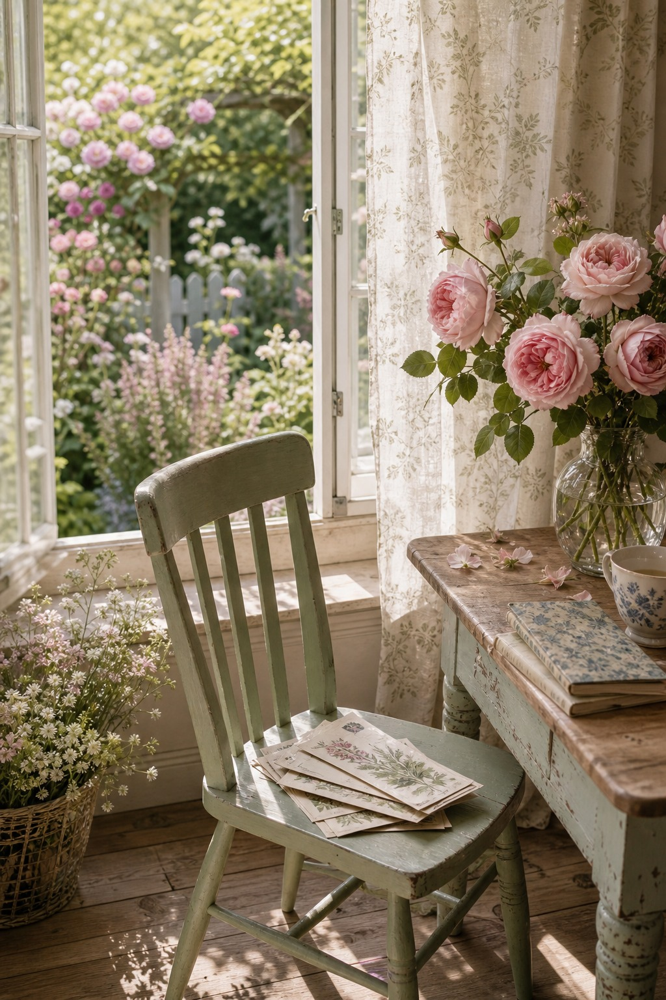
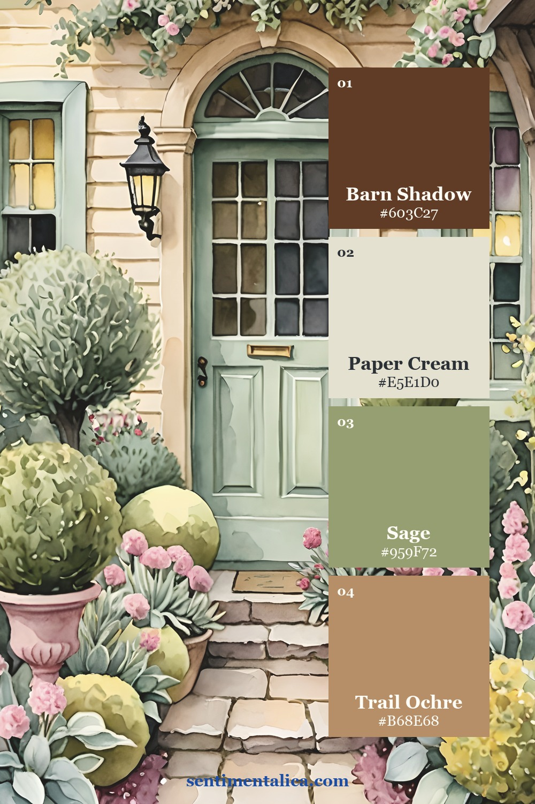
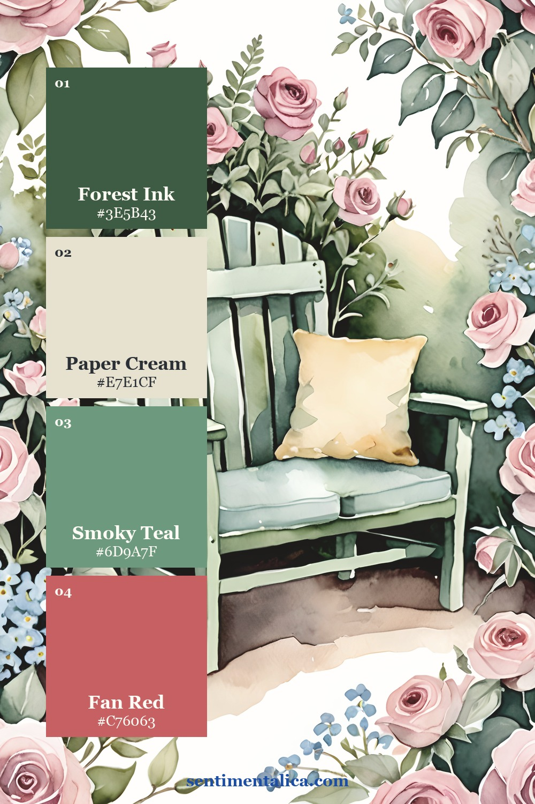
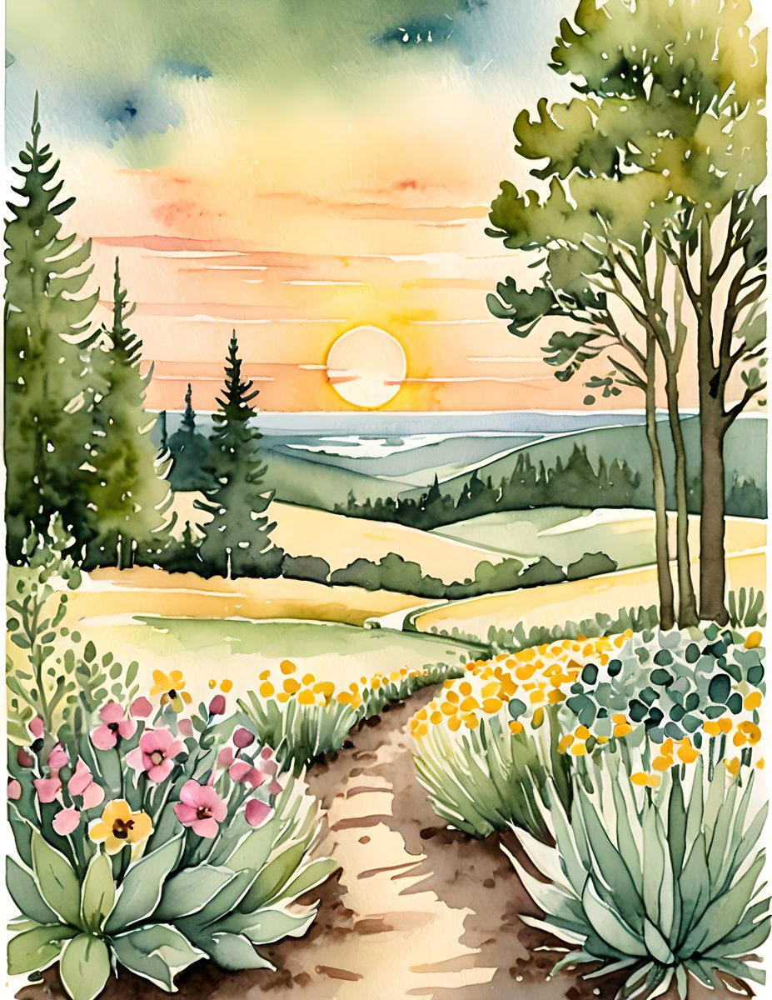
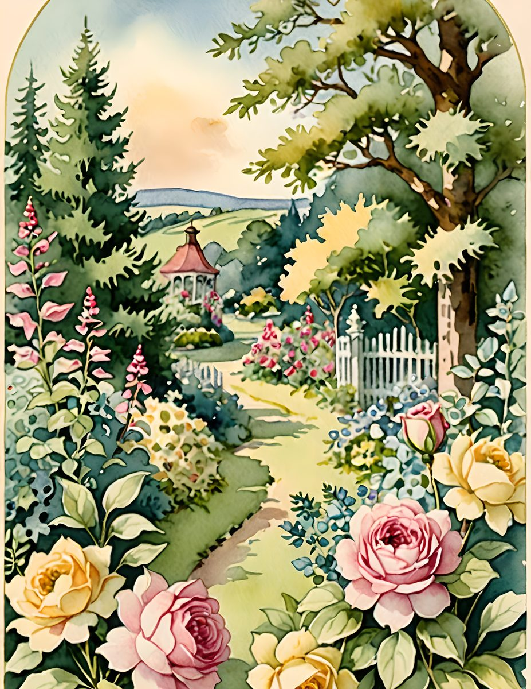
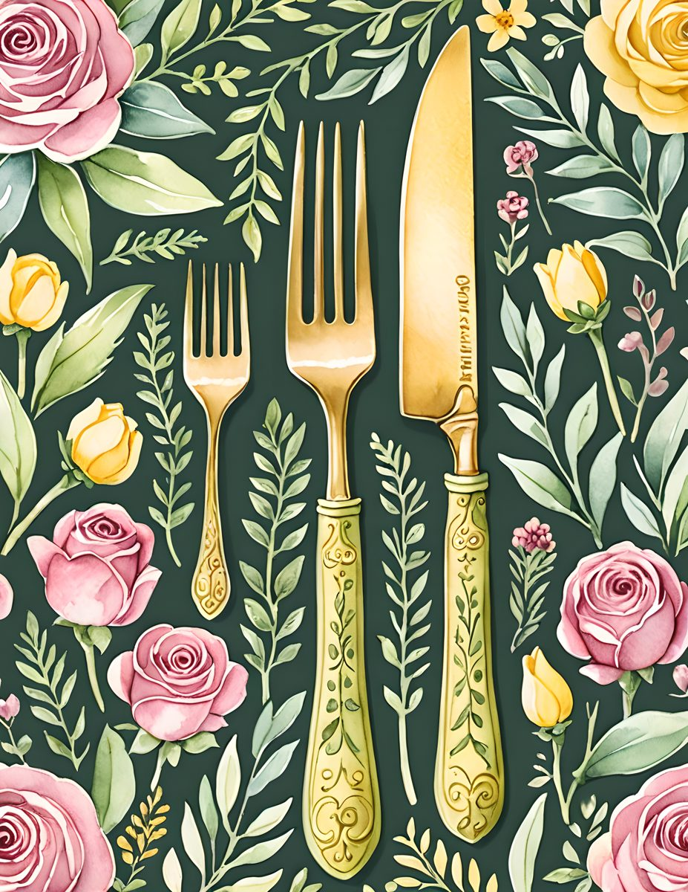
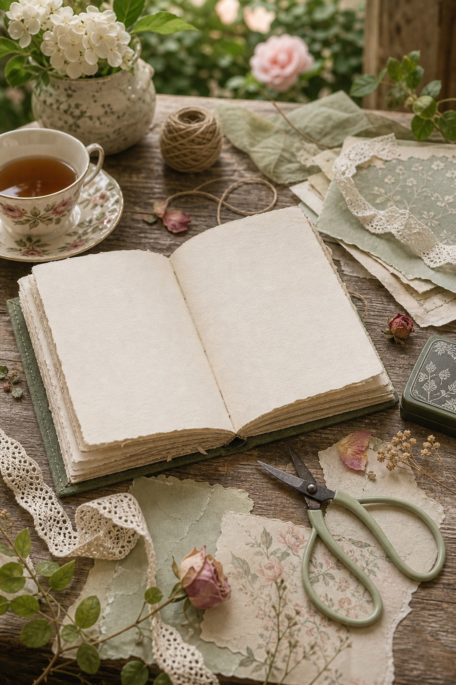

A garden journal page does not need to be packed with flowers. It can feel more beautiful when the florals have room to breathe: one leafy paper, one cream layer, one rose accent, and a quiet piece of lace or twine.

Start with green, not pink
Pink is the charm, but green is the structure. When the page has sage, deep leaf, or garden shadow underneath, the roses feel softer and more natural. Use the green as a base and let the pink be the small reward.

Choose a page that gives you a place
Doorways, benches, windows, and garden paths are useful because they make the page feel like somewhere you could enter. Add your date or memory on a small cream tag instead of covering the scene with a large title.


See the pages up close




Use the matching printable pages when you want a garden page that stays romantic without getting crowded. Keep the product layer soft, then add your own pressed petals, ticket, or handwritten note on top.